Ubuntu安装基础教程
作者：Teliute 来源：基础教程网
九、设置源 返回目录 下一课Ubuntu里的许多应用程序软件包，是放在网络里的服务器上，这些服务器网站，就称作“源”，从源里可以很方便地获取软件包，
下面的方法选一种即可，我们来看这个练习；
1、简单设置源
1）Ubuntu12.10点左边快速启动栏上的齿轮图标，在出来的面板下边点击“软件源”图标
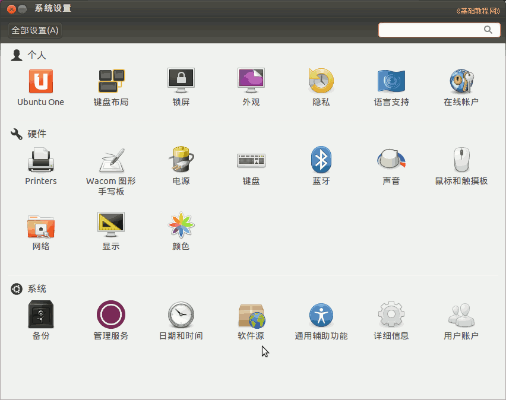
Ubuntu12.04在左边的快速启动面板中点击“软件中心”按钮，再把鼠标移到最上边出现菜单栏，点“编辑－软件源”
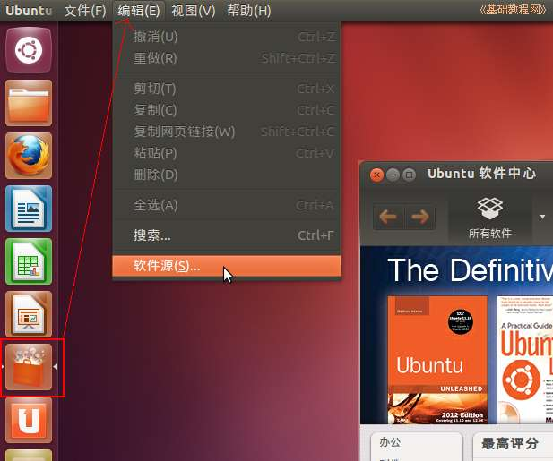
Ubuntu10.04的请点击上面板条的系统菜单“System－系统管理－软件源”命令，出来一个面板；
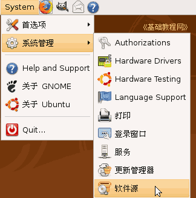
2）先出来一个密码输入框，输入自己密码后，点绿色“OK”按钮确定，进入源面板；
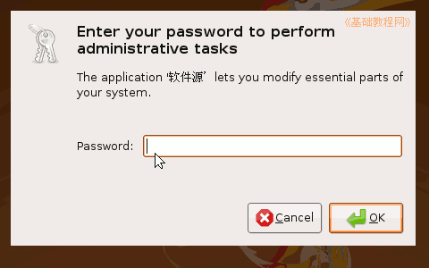
3）进入源面板后，把几个勾都打上，点击下面的下拉列表，选择 server for 中国(china)，即中国的源；
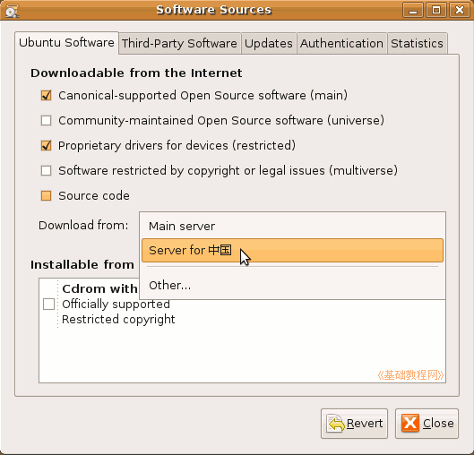
4）然后点右下角的“Close”，出来一个提示对话框，点“Reload”，然后出来刷新对话框；
如果没出来的话，就打开一个终端，输入命令 sudo apt-get update
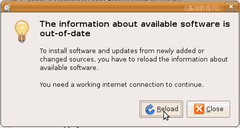；
5）接下来下载软件包信息，耐心等待完成后，自动关闭对话框，这样就简单设置好了源；
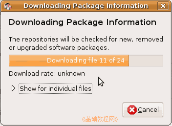
这种方法比较简单，但是速度可能不是很快，可以试试下面的两种方法；
2、使用其他源
1）进入源面板后，打勾五项，然后点下拉列表，选择里面的 Other 其他，出来一个其他源列表；
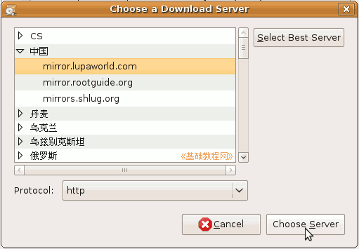
2）在列表里点开“中国”，选择一个，然后点右下角的“Choose Server”，
返回后，点右下角的“Close”关闭，在出来的对话框点“Reload”，等待完成即可；
3、自动选择源
1）在第二种方法里，面板右上角有一个“Chose Best Server”，选择最快源；
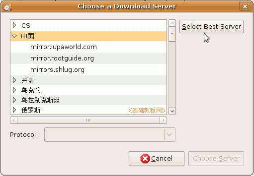
2）点击这个按钮，出来一个自动测速对话框，系统会检测所有源，然后选中一个最快的；
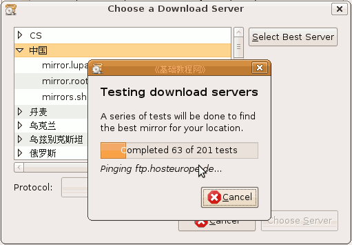
3）选择完成后，在列表里会选中一个源，一般是中国源里的，点右下角的“Chose Server”按钮返回；
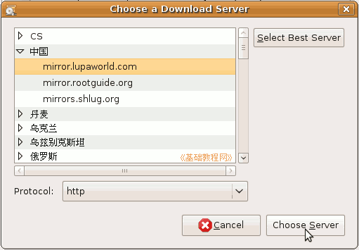
4）然后点右下角的“Close”关闭，出来提示点“Reload”更新；
4、使用第三方源
1）第三方源是其他源服务器，速度要快些，但可能会失效，你可以到 Ubuntu 中文 wiki里查找一下，
进去找到相应的版本(比如8.04)，在里面选一组就可以了；
http://wiki.ubuntu.org.cn/index.php?title=Qref/Source&variant=zh-cn
2）在第一个面板里，把上面的勾都去掉，再点一下中间的列表框，选择“Server for 中国”即中国的服务器；
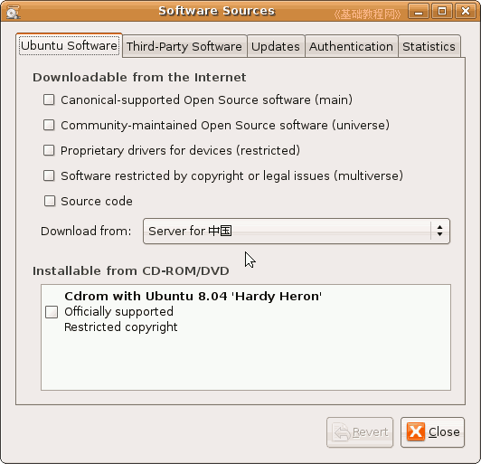
3）再点上边的第二个标签“Third-Party software”第三方软件，进入一个列表面板，
先把里面的两个方框的勾点掉；
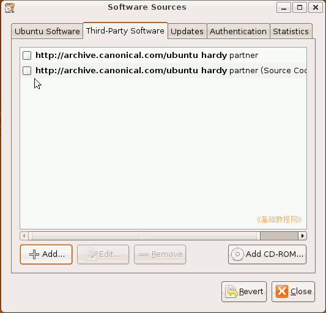
5）然后点下面左边的“＋Add..”添加按钮，出来一个对话框，把找到的一组网址复制粘贴一条进去，
注意细致，每次复制一条，点“＋Add Source”按钮确定，同样再复制下一条；
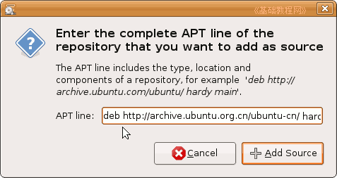
这是 ubuntu-cn 源，里面包括 main、restricted 等，Ubuntu欧洲官方源服务器是这另一组：
deb http://archive.ubuntu.com/ubuntu/ hardy main restricted universe multiverse
deb http://archive.ubuntu.com/ubuntu/ hardy-security main restricted universe multiverse
deb http://archive.ubuntu.com/ubuntu/ hardy-updates main restricted universe multiverse
deb http://archive.ubuntu.com/ubuntu/ hardy-proposed main restricted universe multiverse
deb http://archive.ubuntu.com/ubuntu/ hardy-backports main restricted universe multiverse
deb-src http://archive.ubuntu.com/ubuntu/ hardy main restricted universe multiverse
deb-src http://archive.ubuntu.com/ubuntu/ hardy-security main restricted universe multiverse
deb-src http://archive.ubuntu.com/ubuntu/ hardy-updates main restricted universe multiverse
deb-src http://archive.ubuntu.com/ubuntu/ hardy-proposed main restricted universe multiverse
deb-src http://archive.ubuntu.com/ubuntu/ hardy-backports main restricted universe multiverse
6）把一组源全部添加进去后，点右下角的“close”关闭按钮，出来一个更新提示，
点“Reload”按钮重新载人；；
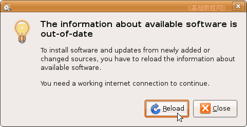
2）点“Reload”按钮后，出来一个下载进度面板，等下载结束后即可自动关闭，
如果下载过程中出现错误提示，可能是源不正确，可以检查一下，或者换另一组较快的源；
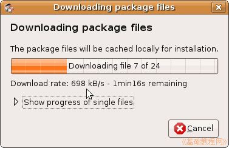 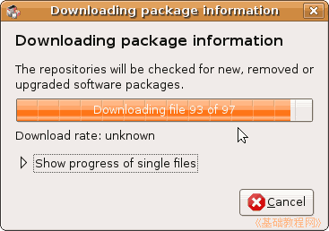
3）源设置好以后，下一步就可以下载各个语言包、软件包、升级包等等；
5、终端设置源列表
1）按 Ctrl+Alt+T 组合键，打开终端，或者点一下左上角的圆圈按钮，稍等在旁边出来的文本框中输入字母 ter 然后点击下边出来的终端图标
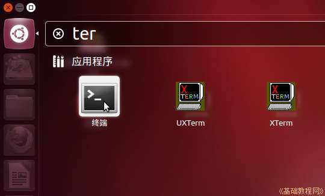
老版请点左上角的菜单“应用程序－附件－终端”进入终端，输入下面的命令：sudo cp /etc/apt/sources.list /etc/apt/sources.list_backup
这句是备份命令，输完后按一下回车键，先提示输入自己的密码，密码不显示，盲打输入后按回车键；
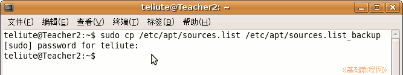
2）再输入下面的命令，输完后按一下回车键，出来一个文本编辑器窗口；
sudo gedit /etc/apt/sources.list
3）在出来的文档窗口里，先删除所有内容，再复制一组源进去，保存关闭；
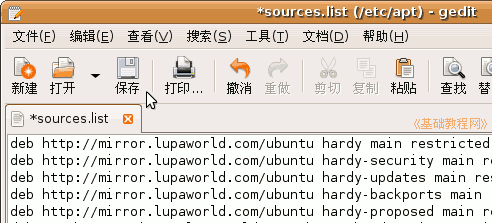
4）返回到终端窗口，再执行下面命令更新源；
sudo apt-get update
本节学习了在Ubuntu中设置源列表的基本方法的基本方法，如果你成功地完成了练习，请继续学习下一课内容；本教程由86团学校TeliuTe制作|著作权所有
基础教程网：http://teliute.org/
美丽的校园……
转载和引用本站内容，请保留作者和本站链接。